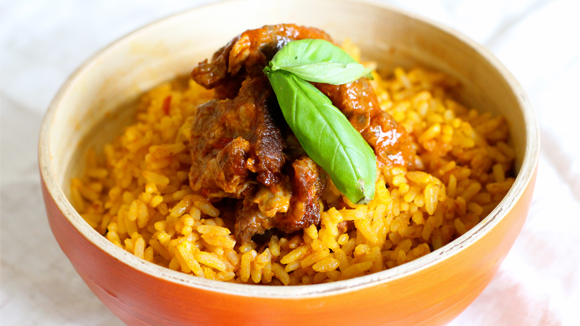

JOLLOF RICE
Top of page
Introduction
This article will teach you how all about how to cook the famous Nigerian Jollof Rice, which happens to be my favourite recipe.
Ingredients Needed
- 4 cups of rice
- 2 kg of chicken (chicken, beef or meat)
- 1 cup of crayfish (optional)
- 1 to 1.2 litre of ground fresh tomatoes
- 40 to 100 ml ground fresh peppers
- Spices (curry, thyme, delice or nutmeg)
- 2 cubes of Knorr
- 2 bulbs of onions
- 20 to 30 cl vegetable or groundnut oil
- Salt to taste.
Cooking Directions
- Parboil the chicken (or any meat of your choice) with the spices listed above and then prepare the main food with the meat extract (meat water) with very little or no extra spice. Add water so that more than half of the entire chicken (or meat of choice) is submerged, then add sliced 1 bulb of onions, 3 cubes of knorr, one tea spoon of salt and maybe a little of curry, thyme and (or) spice of choice.
- Parboil the rice the normal way, boil about three cups of water in a pot, add the four cups of rice and allow to cook for three to four minutes. Then pour out and wash thoroughly with clean water then set aside in a bowl or plastic sieve.
- Bring out an empty pot and then add sliced onions to the hot oil and then the ground tomatoes/pepper after about a minute. This is s trick that helps reduce burning, most jollof rice end up getting burned at the bottom of the pot
- So divide the tomatoes and commence cooking with one of the halves in the pot, add the meat extract (meat water), then about 1 or 2 cups of water. add the ground crayfish (if you are using crayfish), a cube of knorr, if the meat stock is not a good as desired, add salt to taste.
- Stir.
- Spice to your taste with your desired flavors and spices, then add the rice, lower the heat and cover to cook. You can add the other half of the fried tomatoes after cooking for ten to fifteen minutes, also slice onions and spray at the top.
- Then just cook till the rice is soft for consumption, Remember that you can add water occasionally. Then you can drop the fried meat at the top and cover in the last five minutes.
Conclusion
What are you waiting for? Try it out!